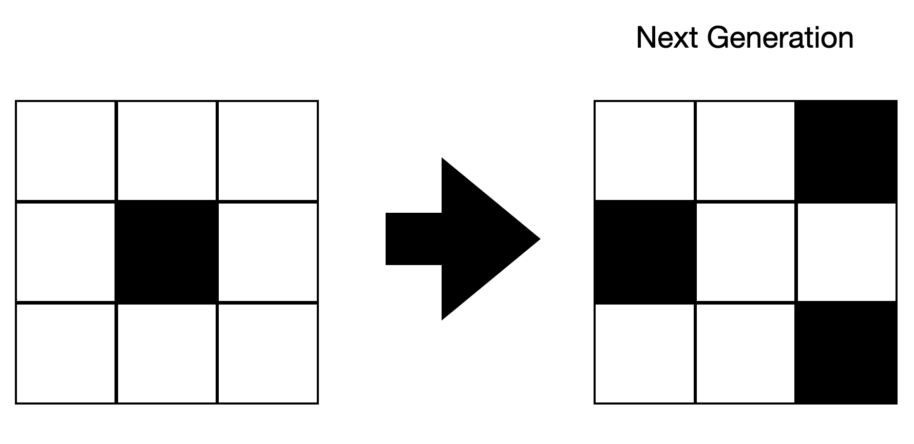
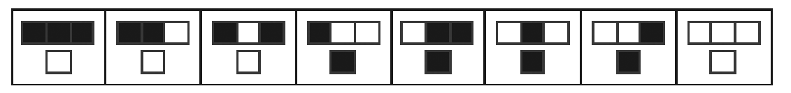
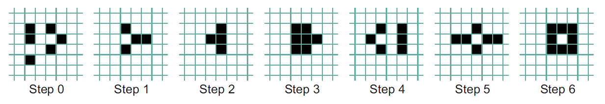
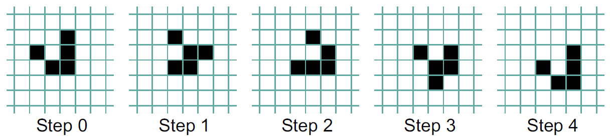
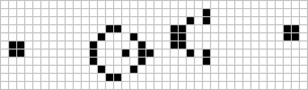

Python Programming
Lecture 8 Complex Systems
8.1 Complex Systems
Complex Systems (复杂系统)
- A complex system is a system composed of many components which may interact with each other.
- These parts are often quite simple to understand and to model individually.
-
When these parts are put together, most complex systems display surprising and unpredictable behavior that can be difficult to explain just by looking at the parts separately.
-
Examples of complex systems are earth's global climate, organisms, the human brain, infrastructure such as power grid, transportation or communication systems, complex software and electronic systems, social and economic organizations (like cities), an ecosystem, a living cell, and ultimately the entire universe.
Example 1: bird flock (Complex Adaptive Systems, 复杂自适应系统)
- The rules are simple!
- There is no "leader" or "control".
- 1. Stay together; 2. Do not crash into each other; 3. Avoid predators and obstacles
Example 2: butterfly effect (Chaos Theory, 混沌理论)
- In chaos theory, the butterfly effect is the sensitive dependence on initial conditions in which a small change in one state of a deterministic nonlinear system can result in large differences in a later state.
- The butterfly effect is derived from the metaphorical example of the details of a tornado being influenced by minor perturbations such as a distant butterfly flapping its wings several weeks earlier.
Example 3: pattern formulation (Fractal Theory, 分形理论)
- In mathematics, fractal is a term used to describe geometric shapes containing detailed structure at arbitrarily small scales, usually having a fractal dimension strictly exceeding the topological dimension.
Mandelbrot set (曼德勃罗集--“上帝的指纹”)
- $z_{n+1} = z_n^2+c$
- A complex number $c$ is a member of the Mandelbrot set if when starting with $z_0=0$ and applying the iteration repeatedly, the absolute value of $z_n$ remains bounded for all $n>0$.
Application
- Complex systems theory provides powerful tools to tackle problems involving many interacting components. It typically involves:
- Reducing problems to their essential rules
- Building models to simulate emergent phenomena
- Predicting future behaviors in complex environments
- This interdisciplinary field draws from a wide range of disciplines, including statistical physics, information theory, nonlinear dynamics, anthropology, computer science, meteorology, sociology, economics, psychology, and biology.
- A landmark recognition of this field came in 2021, when the Nobel Prize in Physics was awarded to Syukuro Manabe, Klaus Hasselmann, and Giorgio Parisi for their groundbreaking contributions to understanding complex systems. Their work laid the foundation for developing more accurate computational models, particularly in predicting the impact of global warming on Earth’s climate.
- 对此领域有兴趣可进一步了解：BBC纪录片-神秘的混沌理论（2009）
Can complex system be Designed?
- Vicsek鸟群模型（Chatgpt生成）
- A Forest Fire Model 森林火灾模型
- Epidemics and Herd Immunity模型
- Cellular Automaton (元胞自动机)
8.2 Cellular Automaton
Cellular Automaton (元胞自动机)
-
Cellular automaton is a simple system made up of cells arranged in a line or grid. Each cell can be in one of a few states, like black or white. The system starts with an initial pattern, then follows a fixed set of rules to decide how the cells change over time.
-
In each round (called a generation), it looks at all the cells and decides which ones need to change. Once all decisions are made, it updates all the cells at once—then repeats the process.
-
This idea sits at the crossroads of mathematics, computer science, and even games, and helps us explore how simple rules can create complex patterns.

-
Mathematicians think of such a collection of rules as a hypothetical machine that operates by itself without human intervention. This is why they are called automata.
-
British scientist Stephen Wolfram has created a simple cellular automaton that exhibits emergent behavior.
-
He was named an inaugural fellow of the American Mathematical Society. he is the founder and CEO of the software company Wolfram Research where he worked as chief designer of Mathematica and the Wolfram Alpha answer engine.
simple cellular automaton

-
It displays one set of possible rules and the resulting, surprisingly complex pattern that is created by printing each new generation of the system under the previous one. It begins with one black cell and all the rest white.
-
Notice that even though there is nothing random in the rules, this cellular automaton produces a pattern with distinctive and apparently random features.
- 动态展示一维元胞自动机
-
Wolfram described his work in detail in his book A New Kind of Science (2002).
-
They must consist of simple cells whose rules are defined locally.
-
The system must allow for long-range communication.
-
The level of activity of the cells is a good indicator for the complexity of the behavior of the system.
-
Cellular automata show us that the threshold for complexity is surprisingly low.
-
8.3 Game of Life
Game of Life (生命演化游戏)
-
Probably the most famous cellular automaton was invented by John Conway and is called the Game of Life.
-
Conway was a Professor Emeritus of Mathematics at Princeton University in New Jersey.
-
Conway's automaton consists of cells that are laid out on a two-dimensional grid.
-
The grid goes on indefinitely in all directions. Each cell on the grid has eight neighbors: the cells that surround it orthogonally and diagonally. Each cell can be in two different states: It is either dead or alive.
-
In most examples, dead cells are rendered white, while live cells are colored black.
-
Rules
-
A live cell that has fewer than two live neighbors dies from loneliness.
-
A live cell that has more than three live neighbors dies from overcrowding.
-
A live cell that has two or three live neighbors stays alive.
-
A dead cell that has exactly three live neighbors becomes alive.
-

import os
import random
width = 60
height = 60
screen = []
Step 1: Initialization
def Init():
for i in range(height):
line = []
for j in range(width):
if random.random() > 0.8:
line.append('#')
else:
line.append(' ')
screen.append(line)
Step 2: Show the screen
def PrintScreen():
for i in range(height):
for j in range(width):
print(screen[i][j] + ' ', end='')
print()
Step 3: Get cells
def TryGetCell(i, j):
i = i % height
j = j % width
return screen[i][j]
Step 4: Count cells nearby
def GetNearbyCellsCount(i, j):
nearby = []
nearby.append(TryGetCell(i - 1, j - 1))
nearby.append(TryGetCell(i - 1, j))
nearby.append(TryGetCell(i - 1, j + 1))
nearby.append(TryGetCell(i, j - 1))
nearby.append(TryGetCell(i, j + 1))
nearby.append(TryGetCell(i + 1, j - 1))
nearby.append(TryGetCell(i + 1, j))
nearby.append(TryGetCell(i + 1, j + 1))
num = 0
for x in nearby:
if x == '#':
num = num + 1
return num
Step 5: Update
def Update():
global screen
newScreen = []
for i in range(height):
line = []
for j in range(width):
line.append(' ')
newScreen.append(line)
for i in range(height):
for j in range(width):
count = GetNearbyCellsCount(i, j)
if count == 3:
newScreen[i][j] = '#'
elif count < 2 or count > 3:
newScreen[i][j] = ' '
else:
newScreen[i][j] = screen[i][j]
screen = newScreen
Step 6: Console (for win). For mac, replace "cls" by "clear".
def Start():
os.system("cls")
print('== Game of Life ==')
print('Press any key...')
input()
os.system("cls")
Init()
PrintScreen()
c = input()
while c!= 'q':
os.system("cls")
Update()
PrintScreen()
c = input()
print('End')
Start()
-
When the Game of Life begins, it often looks chaotic, with live cells quickly spreading and changing. After a while, it usually settles into a stable pattern or forms small groups that flip back and forth. Early researchers wondered: "Is there a starting pattern that keeps growing forever?"
-
Glider
-
Glider gun



Summary
- Functions
- Reading: Python for Everybody, Chapter 4
- Reading: Python Crash Course, Chapter 8